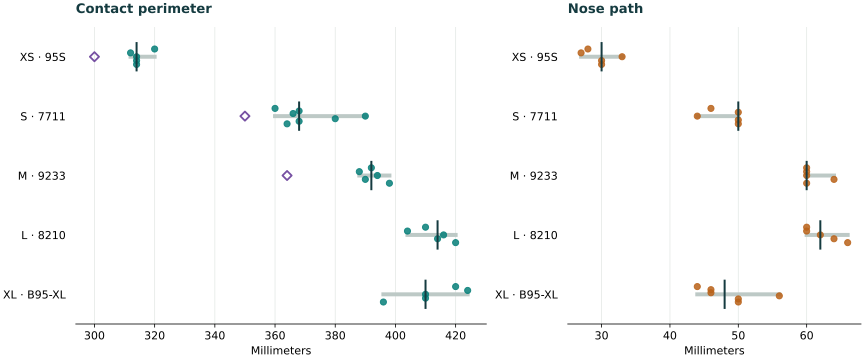

How repeatable are the mask measurements?
Five Zimi models, with repeated readings of the same physical mask/frame for each size. You confirmed the paths match those used for production measurements. All lengths below are in millimeters.
Every reading, not just the average

Dots: individual readings (vertical offsets separate overlaps). Dark tick: median. Gray line: observed min–max. Purple outlined diamond: production perimeter, where recorded. Ranges are not confidence intervals.
Perimeter readings
| Size · model | Readings | Median | Mean | Min–max | SD¹ | Production | Median − production |
|---|---|---|---|---|---|---|---|
| XS · 95S | 5 | 314 | 314.8 | 312–320 | 3.0 | 300 | +14 |
| S · 7711 | 7 | 368 | 370.9 | 360–390 | 10.4 | 350 | +18 |
| M · 9233 | 5 | 392 | 392.4 | 388–398 | 3.8 | 364 | +28 |
| L · 8210 | 5 | 414 | 412.8 | 404–420 | 6.1 | Not recorded | |
| XL · B95-XL | 5 | 410 | 412.0 | 396–424 | 10.9 | Not recorded | |
¹Sample SD, with n−1 denominator. Production values are a read-only November 15 snapshot. 8210 and B95-XL have no perimeter recorded in production. No readings were discarded.
Nose-path readings
| Size · model | Readings | Median | Mean | Min–max | SD¹ |
|---|---|---|---|---|---|
| XS · 95S | 5 | 30 | 29.6 | 27–33 | 2.3 |
| S · 7711 | 5 | 50 | 48.0 | 44–50 | 2.8 |
| M · 9233 | 5 | 60 | 60.8 | 60–64 | 1.8 |
| L · 8210 | 5 | 62 | 62.4 | 60–66 | 2.6 |
| XL · B95-XL | 6 | 48 | 48.7 | 44–56 | 4.3 |
Perimeter and nose counts differ for 7711 and B95-XL; we do not assume the readings are paired. Production has no directly comparable nose-path values in this snapshot.
What this means for a measurement-error budget
- Reference repeatability matters. 7711 perimeter readings span 30 mm; B95-XL spans 28 mm. That is variability in remeasuring the same specimen, not evidence of manufacturing variation.
- The repeated median S-to-M gap is 24 mm. XS-to-S is 54 mm; M-to-L is 22 mm. L-to-XL is −4 mm, with broad overlap. Some readings overlap between neighboring groups.
- The old 14 mm catalog gap needs qualification. Compared with production, the 95S, 7711 and 9233 medians are higher by 14, 18 and 28 mm. These differences are not a single common offset.
- Nose geometry adds separate context. B95-XL’s nose median is 48 mm, compared with 62 mm for 8210, despite similar perimeter medians. This is consistent with measuring nose geometry separately; it does not itself validate a prediction model.
Practical next step
Document the contact path and tape tension, keep the frame condition consistent, and compare repeated readings across sessions or raters. Preserve every reading while investigating the 7711 spread and L/XL overlap. Use a clearly defined reference protocol before treating the medians as ground truth or replacing production values.